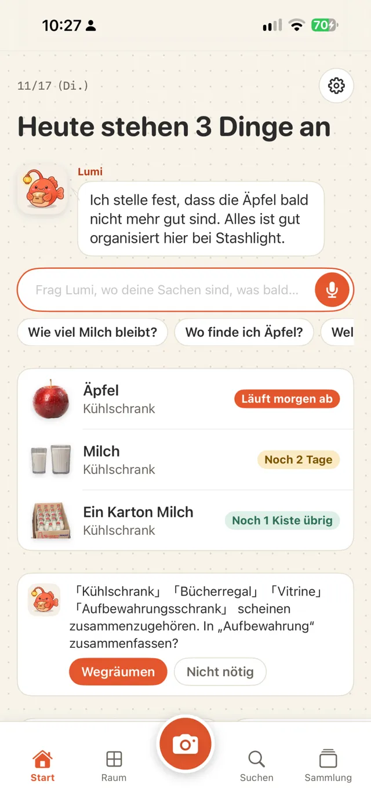
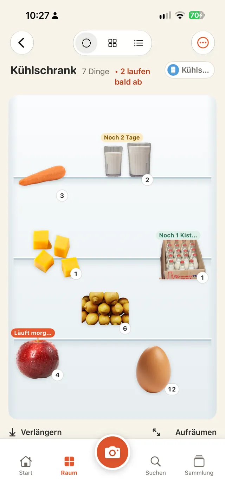
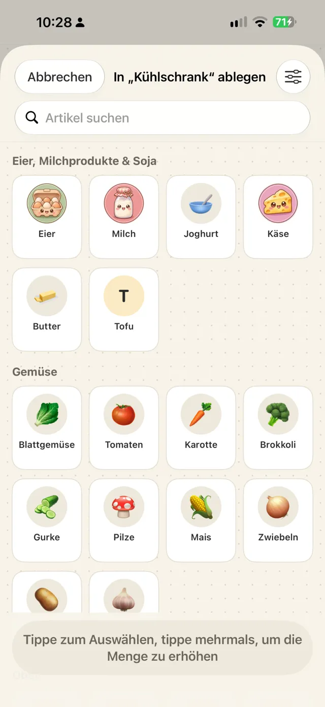
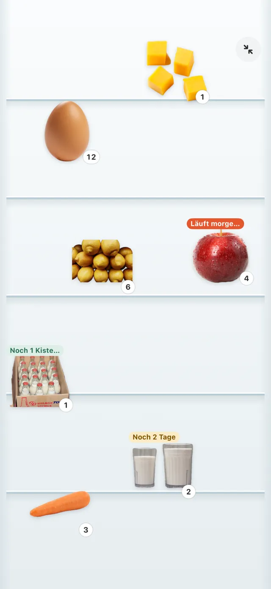
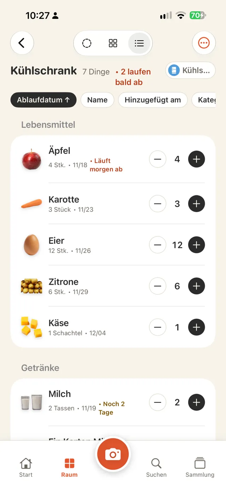
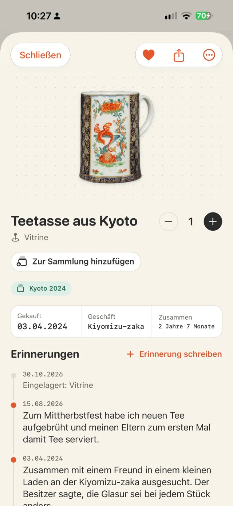
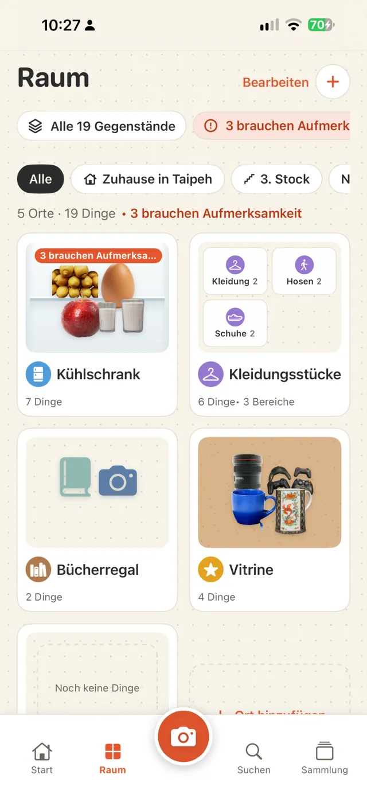
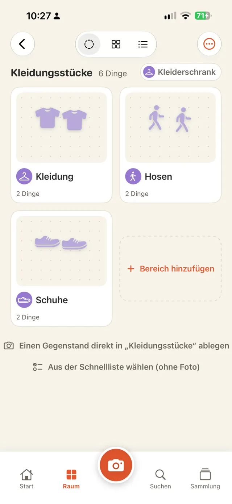
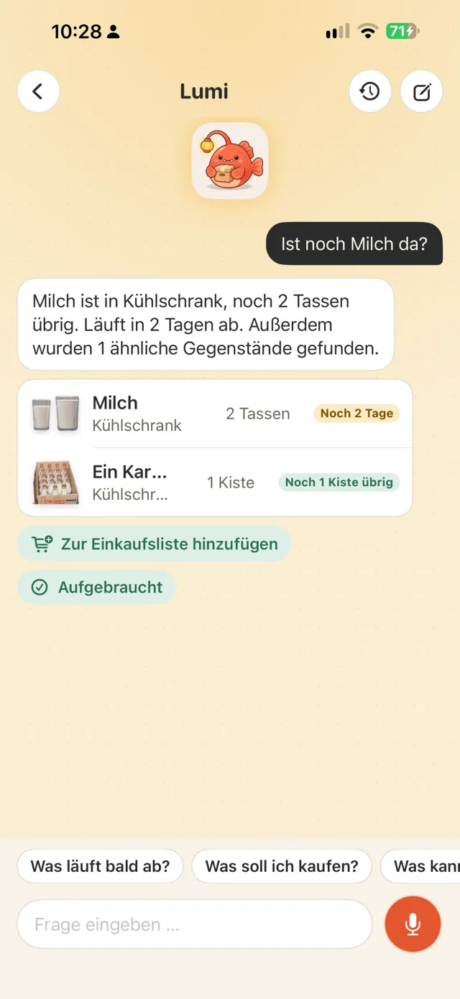
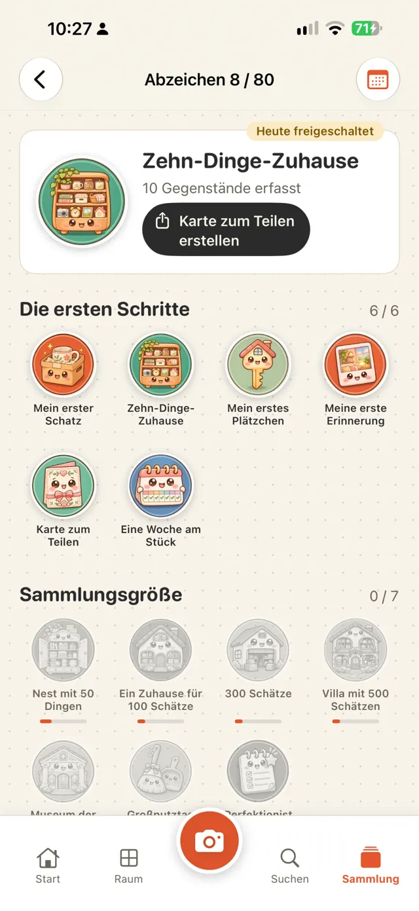

Haushaltsinventar und Erinnerungsstücke für das iPhone
Foto machen, schon ist es gespeichert.
Suchen, schon ist es gefunden.
Die Milch im Kühlschrank, die Küchenrollen im Abstellraum, die Bücher im Regal, die Tasse aus dem Urlaub. Mach ein Foto. Wo es liegt, wie viel noch da ist und wann es abläuft, bleibt auf deinem iPhone gespeichert.
Laden im App Store- ✓ Kostenlos laden, 3 Orte gratis
- ✓ Kein Account
- ✓ Daten bleiben auf deinem iPhone

Hinzufügen
Ein Foto machen, freistellen und speichern
Halte die Kamera auf einen Gegenstand und tippe auf den Auslöser; der Hintergrund wird automatisch entfernt. Dieselbe Kamera liest auch Barcodes: Lebensmittel werden bei Open Food Facts nachgeschlagen, Bücher bei Open Library. Nach dem Einkauf speicherst du mit dem Serienscan ein Dutzend Artikel auf einmal.

Schnellliste
Ohne Foto einfach abhaken
Für Dinge, die du ständig kaufst, etwa Eier, Milch und Küchenrollen: Tippe sie in der Schnellliste an, um sie hinzuzufügen, und tippe erneut für eine größere Menge. Das Ablaufdatum wird anhand der üblichen Haltbarkeit eingetragen. Kühlschrank, Schrank, Medizinbox und Kleiderschrank haben jeweils eine eigene Liste; du kannst Einträge hinzufügen oder entfernen und eigene Fotos einsetzen.

Drei Ansichten
Auslage, Raster oder Liste wählen
Die Auslage ordnet Fotos auf einer Kühlschranktür, auf Punktepapier oder einer Pinnwand an; du kannst sie verschieben und in der Größe ändern. Das Raster ist zum Suchen gedacht, die Liste für die Inventur: mit Plus- und Minus-Tasten und einer Wischgeste, um etwas als aufgebraucht zu markieren.
Vollbild
Nur Hintergrund und Fotos anzeigen
Wird eine Auslage zu voll, tippst du auf „Verlängern“ für eine weitere Seite und scrollst nach unten. Im Vollbild werden Titel und Tasten ausgeblendet, sodass der Ort den ganzen Bildschirm füllt. Du kannst Fotos weiterhin verschieben, skalieren und zum Öffnen antippen.

Ablaufdaten
Das iPhone liest das Datum von der Verpackung
Beim Fotografieren wird das aufgedruckte Ablaufdatum gelesen, und du bestätigst es. Eine Mitteilung erinnert dich einige Tage vorher; wie viele, legst du selbst fest.

Erinnerungsstücke
Die Geschichte zu jedem aufbewahrten Stück notieren
Eine Tasse aus dem Urlaub, ein Geschenk von einer Freundin: Füge Fotos, ein Datum, einen Ort und ein paar Zeilen hinzu. Fasse sie in Sammlungen zusammen, zum Beispiel „Kyoto 2024“. „An diesem Tag“ holt sie auf den Home-Bildschirm zurück.

Orte
Kühlschrank, 800er-Abstellraum, Bücherregal oder eigener Ort
Zu den Vorlagen gehören Kühlschrank, 800er-Abstellraum (ein begehbarer Abstellraum von etwa 80 cm Tiefe), Schrank, Bücherregal, Kleiderschrank, Sammlervitrine, Medizinbox und Umzugskartons. Du kannst auch selbst ein Symbol und einen Namen wählen. Orte lassen sich nach Wohnung oder Stockwerk gruppieren, wenn du möchtest.

Ebenen
Orte innerhalb von Orten anlegen
„Kleidung“ kann „Oberteile“, „Hosen“ und „Schuhe“ enthalten, und die Karte zeigt die Orte darin an. Zum Verschieben nutzt du im Menü „Verschieben in …“ oder hältst eine Karte gedrückt und ziehst sie auf eine andere. Auch Kategorien haben Unterkategorien, etwa Kleidung › Hosen, die beim Sichern automatisch zugewiesen werden.

Lumi fragen
Nicht gefunden? Einfach fragen
Auf dem Home-Bildschirm kannst du das Maskottchen Lumi fragen, etwa „Wo ist mein Reisepass?“ oder „Ist noch Milch da?“, per Eingabe oder gedrückt halten und sprechen. Lumi antwortet mit dem Ort, der Restmenge und dem Ablaufdatum. Die Spracherkennung läuft auf dem iPhone, sofern es das unterstützt. Ohne KI funktioniert die Suche über Namen, Kategorien und Orte.

Wann es hilft
- Vor dem Einkauf nachsehen, was im Kühlschrank ist
- Zuerst kochen, was zuerst abläuft
- Herausfinden, wo die AA-Batterien liegen
- Sich merken, wer ein Buch ausgeliehen hat
- Notieren, was in welchem Umzugskarton steckt
- Reiseandenken sortieren
- Die Medizinbox auf abgelaufene Artikel prüfen
In 50 Sekunden ansehen
Der Kühlschrank in drei Ansichten, Mengen ändern, in „Kleidung“ hineinschauen, die Erinnerungen zu einem Stück öffnen und Lumi fragen, was bald abläuft.
KI (optional)
Alles funktioniert auch ohne KI. Wenn du sie nutzen möchtest, gibt es zwei Quellen. Ist die KI aktiviert, wird sie aufgerufen, wenn du auf eine KI-Taste tippst, und einmal täglich für den kurzen Hinweis auf dem Home-Bildschirm.
Von Apple integriert
Apple Intelligence auf deinem iPhone: kostenlos, offline, die Daten verlassen das iPhone nicht. Erfordert ein unterstütztes iPhone mit iOS 26 oder neuer.
Dein eigener API-Schlüssel
Gemini, Claude, DeepSeek und weitere. Der Schlüssel wird nur im Schlüsselbund dieses iPhones gespeichert, und die Daten gehen direkt an den von dir gewählten Dienst, nicht über uns.
- Benennen: erkennt, was auf dem Foto zu sehen ist, und schlägt Kategorie und Einheit vor
- Diesen Ort ansehen: was im Kühlschrank zuerst gegessen werden sollte, was im Abstellraum nachgekauft werden muss, was in der Medizinbox abgelaufen ist (keine medizinische Beratung)
- Mit einem Satz suchen: ergänzt Synonyme und sucht dann
- Erinnerung ausformulieren: macht aus wenigen Worten einen Absatz, ohne etwas hinzuzufügen, das du nicht gesagt hast
Abzeichen und Teilen-Karten
Dreißig Tage ohne abgelaufene Artikel im Kühlschrank bringen das Abzeichen „Kühlschrankwächter“. Abzeichen, Artikelgeschichten und ein Jahresrückblick lassen sich als Bild sichern; Ort und Preis werden standardmäßig weggelassen.

Details
| Gerät | iPhone (iOS 18 oder neuer) |
|---|---|
| Sprachen | English, 繁體中文, 简体中文, 日本語, 한국어, ไทย |
| Preis | Kostenlos laden (mit Bannerwerbung, 3 Orten und den 2 letzten Chats mit Lumi); Pro entfernt die Werbung und beide Begrenzungen: 1 US-Dollar pro Woche, 3 US-Dollar pro Monat oder einmalig 5 US-Dollar |
| Account | Nicht nötig |
| Daten | Nur auf diesem iPhone, Export als CSV; gelöschte Artikel lassen sich 30 Tage lang wiederherstellen |
| Netzwerk | Nur für Barcode-Abfragen und den KI-Dienst deiner Wahl |
Grenzen
- Noch keine Synchronisierung über iCloud und kein Teilen mit der Familie
- Produkte, die in den Barcode-Datenbanken fehlen, benötigen einen Namen von dir; beim nächsten Scan dieses Barcodes wird er verwendet
- Das Freistellen hängt vom Foto ab; schlägt es fehl, wird das Originalfoto verwendet
Deine Daten bleiben auf deinem iPhone
- Kein Account, kein Server
- Die kostenlose Version zeigt nur nicht personalisierte Werbung, kein Tracking
- Kamera und Fotos werden nur genutzt, wenn du sie verwendest
Mit dem Kühlschrank anfangen
Öffne Stashlight, wähle „Kühlschrank“ und fotografiere die drei Dinge, die du am häufigsten kaufst.
Laden im App Store